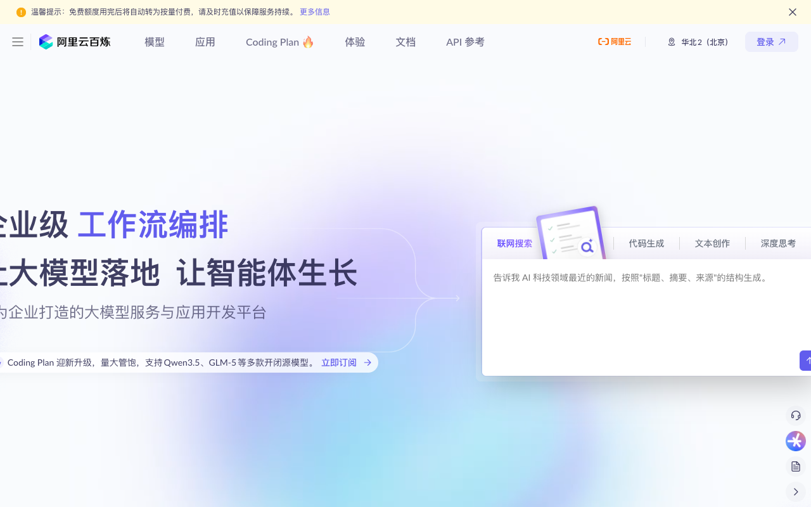
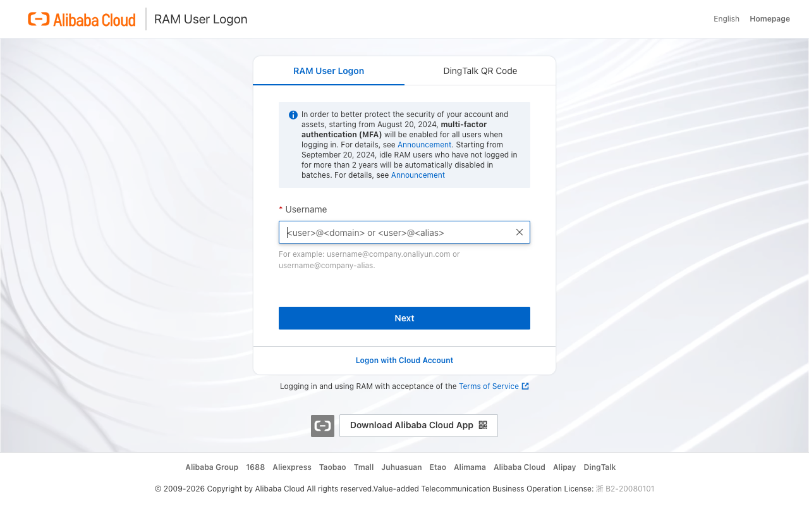
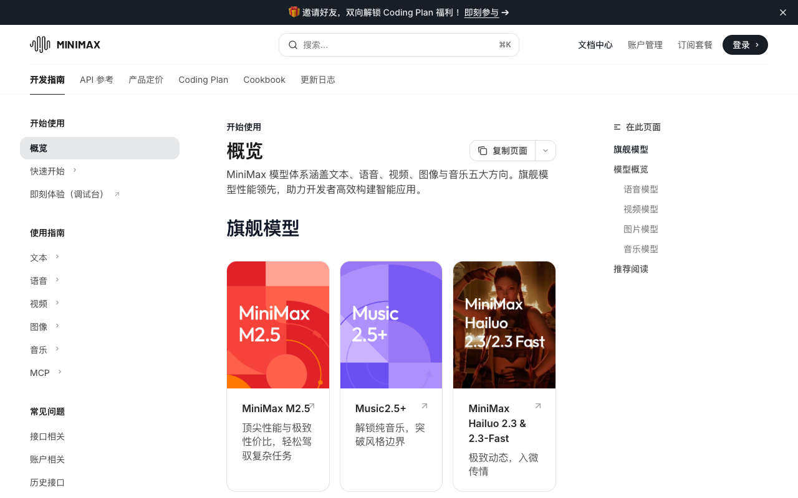
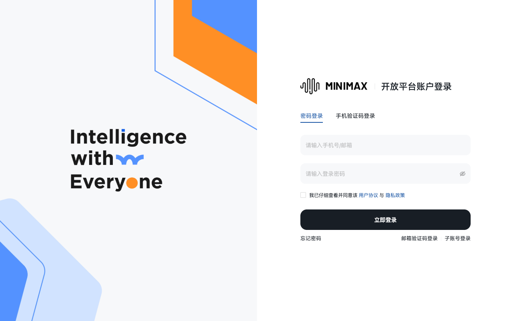

🔑 获取大模型 API Key 傻瓜教程
本教程一步一步带你获取阿里百炼和 MiniMax 的 API Key。不需要编程经验，跟着截图和说明操作即可。
视频教程即将上线
我们正在录制详细的屏幕操作视频，预计本周内发布。
届时你可以边看视频边操作，更加轻松易懂！
📧 想第一时间收到通知？在 Telegram 群组留言告诉我们～
📸 截图说明：
本教程已添加真实截图！部分需要登录的页面（如 API Key 管理）暂时使用占位图，
因为这些页面涉及个人账户信息。我们会在本周内补充完整所有截图。
当前状态：✅ 4 张首页/登录页截图已就绪 |
⏳ 6 张登录后截图待补充
💡 开始前准备：
- 📱 一个手机号（用于接收验证码）
- 💳 支付宝或微信（用于实名认证和充值）
- ⏰ 大约 10-20 分钟时间
- 💻 电脑浏览器（推荐 Chrome 或 Edge）
⚡ 5 分钟快速开始：
赶时间？只需 3 步：
下面是详细图文教程，每一步都有截图说明～
📌 先选哪个平台？
两个平台都可以用，主要区别如下。新手建议从阿里百炼开始！
| 对比项 | 🥇 阿里百炼 | 🥈 MiniMax |
|---|---|---|
| 访问速度 | ✅ 国内非常快 | ✅ 国内快 |
| 免费额度 | ✅ 新用户约 10-50 元 | ✅ 新用户有体验额度 |
| 中文能力 | ✅✅ 优秀（通义千问） | ✅ 良好 |
| 创意写作 | ✅ 良好 | ✅✅ 优秀（擅长角色扮演） |
| 文档完善度 | ✅✅ 非常完善 | ✅ 较完善 |
| 推荐模型 | qwen-max / qwen-plus |
abab6.5 / abab6.5s |
| 适合场景 | 日常使用、中文任务、新手入门 | 创意写作、角色扮演、对比测试 |
🤔 不知道怎么选？
无脑推荐：阿里百炼 — 文档完善、访问稳定、免费额度够用，新手友好！
💰 预算建议：
- 只想试试：先不充值，用免费额度跑通流程
- 自己日常用：充值 10-50 元够用很久（看使用频率）
- 多人测试：充值 100 元左右，注意设置额度提醒
🅰️ 阿里百炼 API Key 获取教程
阿里百炼是阿里云推出的大模型服务平台，提供通义千问系列模型的 API 访问。
第 1 步：访问阿里百炼官网
1
打开浏览器，访问下方链接：

图 1：阿里百炼控制台首页
第 2 步：登录/注册阿里云账号
2
使用手机号或支付宝登录。如果没有账号，点击"免费注册"按提示完成注册。
📝 实名认证提示：
需要完成实名认证才能使用 API 服务。按页面提示选择以下任一方式：
需要完成实名认证才能使用 API 服务。按页面提示选择以下任一方式：
- 支付宝扫码认证（最快，推荐）
- 上传身份证正反面
- 银行卡验证

图 2：登录页面，推荐使用支付宝快捷登录
第 3 步：进入 API Key 管理页面
3
登录成功后，在页面左侧导航栏找到并点击 "API-KEY 管理"（也可能显示为"密钥管理"）。
📸
截图待更新
需要登录后捕获：左侧菜单中的 API-KEY 管理入口
截图待更新
需要登录后捕获：左侧菜单中的 API-KEY 管理入口
图 3：左侧菜单中的 API-KEY 管理入口（需登录后截图）
第 4 步：创建新的 API Key
4
在 API-KEY 管理页面，点击 "创建新的 API-Key" 按钮（通常在页面右上角或中间位置）。
5
在弹出的窗口中，给 Key 起个容易识别的名字（比如
lobster-ai 或 my-first-key），然后点击"确定"或"创建"。
📸
截图待更新
需要登录后捕获：创建 API Key 弹窗界面
截图待更新
需要登录后捕获：创建 API Key 弹窗界面
图 4：创建 API Key 弹窗（需登录后截图）
⚠️ 极其重要：
API Key 只会显示这一次！创建成功后会立即显示完整的 Key，请：
API Key 只会显示这一次！创建成功后会立即显示完整的 Key，请：
- 立即点击"复制"按钮
- 粘贴到安全的地方（密码管理器、加密笔记、或本地文本文件）
- 确认保存成功后再关闭页面
第 5 步：复制并保存 API Key
6
复制 API Key（通常以
sk- 开头，后面跟着一长串字母数字），粘贴到你选择的安全位置。
✅ 恭喜！你已经成功获取阿里百炼的 API Key！接下来可以回到部署指南继续配置。
📸
截图待更新
需要登录后捕获：API Key 显示和复制界面
截图待更新
需要登录后捕获：API Key 显示和复制界面
图 5：API Key 显示页面（需登录后截图）
第 6 步：开通模型服务（如需要）
7
在控制台左侧菜单找到 "模型广场" 或 "模型管理"，点击进入。
8
在模型列表中找到 Qwen-Max 或 Qwen-Plus，点击"开通"或"启用"。
💰 关于充值和免费额度：
- 新用户通常有免费额度（约 10-50 元等值的 token），足够测试使用
- 免费额度用完后需要充值才能继续使用
- 在"费用中心"或"充值"页面可以充值，最低一般 10 元起
- 建议设置"消费提醒"，避免意外超支
🅱️ MiniMax API Key 获取教程
MiniMax（海螺 AI）是另一家领先的大模型公司，提供强大的创意和对话能力。
第 1 步：访问 MiniMax 开放平台
1
打开浏览器，访问下方链接：

图 6：MiniMax 开放平台首页
第 2 步：登录/注册账号
2
点击页面右上角的 "登录" 按钮，使用手机号登录。如果没有账号，点击"注册"按提示完成。
📝 注册提示：
输入手机号后，会收到短信验证码。输入验证码即可完成注册/登录。整个过程约 1-2 分钟。
输入手机号后，会收到短信验证码。输入验证码即可完成注册/登录。整个过程约 1-2 分钟。

图 7：MiniMax 登录页面，输入手机号获取验证码
第 3 步：进入 API Key 管理
3
登录成功后，点击页面右上角的头像或用户名，在下拉菜单中选择 "API 密钥管理"。
📸
截图待更新
需要登录后捕获：用户菜单中的 API 密钥管理入口
截图待更新
需要登录后捕获：用户菜单中的 API 密钥管理入口
图 8：API 密钥管理入口（需登录后截图）
第 4 步：创建 API Key
4
在 API 密钥管理页面，点击 "创建密钥" 按钮（通常在页面明显位置）。
5
给密钥起个容易识别的名字（比如
lobster-ai），权限设置保持默认即可，然后点击"确认创建"。
📸
截图待更新
需要登录后捕获：创建密钥弹窗界面
截图待更新
需要登录后捕获：创建密钥弹窗界面
图 9：创建密钥弹窗（需登录后截图）
第 5 步：复制并保存 API Key
6
复制 API Key（通常以
sk- 开头），立即粘贴到安全位置保存。
⚠️ 极其重要：
和阿里百炼一样，MiniMax 的 API Key 只会显示一次！
和阿里百炼一样，MiniMax 的 API Key 只会显示一次！
- 创建成功后立即点击"复制"
- 粘贴到安全位置（密码管理器、加密笔记等）
- 确认保存好再关闭页面
✅ 恭喜！你已经成功获取 MiniMax 的 API Key！
📸
截图待更新
需要登录后捕获：API Key 显示和复制界面
截图待更新
需要登录后捕获：API Key 显示和复制界面
图 10：API Key 显示页面（需登录后截图）
第 6 步：充值（如需要）
7
在控制台顶部或左侧菜单找到 "充值" 或 "账单" 页面。
8
选择充值金额（最低通常 10 元起），选择支付方式（微信/支付宝），完成支付。
💰 MiniMax 价格参考：
| 模型 | 输入价格 | 输出价格 | 特点 |
|---|---|---|---|
abab6.5 |
约 0.1 元/千 tokens | 约 0.3 元/千 tokens | 能力强，适合创意写作 |
abab6.5s |
约 0.05 元/千 tokens | 约 0.15 元/千 tokens | 性价比高，适合日常使用 |
- 新用户可能有免费体验额度
- 建议设置消费提醒，避免意外超支
- 可以先小额充值测试，确认好用再增加
📋 获取到 API Key 后做什么？
🎯 下一步操作清单：
- 回到 龙虾 AI 部署指南
- 在配置文件（通常是
.env文件）中填入你的 API Key - 选择模型：阿里百炼选
qwen-max或qwen-plus，MiniMax 选abab6.5 - 运行测试命令，确认 API Key 有效
- 开始使用你的 AI 打工人！🎉
❓ 常见问题 FAQ
Q: API Key 泄露了怎么办？
⚠️ 立即采取以下行动：
- 立即禁用：马上到对应平台删除或禁用这个 Key
- 重新创建：创建一个新的 API Key
- 更新配置：在你的配置文件中更新为新 Key
- 检查使用：查看是否有异常使用记录
💡 预防建议：不要把 API Key 上传到 GitHub、不要发给别人、不要放在公开的代码仓库里。
Q: 免费额度用完了怎么办？
需要充值才能继续使用。建议：
- 先充值小额（10-50 元）测试，确认服务正常
- 在平台设置"消费提醒"或"额度预警"，避免意外超支
- 如果用量大，可以关注平台的套餐优惠或月付计划
- 定期检查使用量，了解消费情况
Q: 两个平台选哪个更好？
根据你的需求选择：
| 场景 | 推荐平台 | 理由 |
|---|---|---|
| 第一次使用 | 阿里百炼 | 文档完善、访问稳定、中文支持好 |
| 想对比效果 | 两个都试 | 不同模型有不同特点，可以对比选择 |
| 预算有限 | 对比定价 | 查看两个平台的最新定价，选性价比高的 |
| 创意写作 | MiniMax | 在创意和角色扮演方面表现更强 |
Q: API Key 填到哪里？
在龙虾 AI 的配置文件中，通常是以下位置之一：
.env文件中的API_KEY=sk-xxxxx- 部署脚本里的配置变量
- Vercel 环境变量设置页面
具体位置请参考 部署指南。
Q: 为什么我的 API Key 不能用？
检查以下几点：
- 确认 Key 复制完整（没有漏掉字符或多空格）
- 确认模型服务已开通（在平台模型管理页面检查）
- 确认账户有可用额度（免费额度或已充值）
- 确认网络正常（国内平台需要大陆网络访问）
- 检查错误信息，根据提示排查问题
🎥 视频教程即将上线
我们正在录制详细的屏幕操作视频，包括：
- 完整的注册和认证流程
- 每一步的屏幕操作演示
- 常见问题现场解决
- 配置和测试全过程
📧 想第一时间收到通知？在 Telegram 群组留言告诉我们～